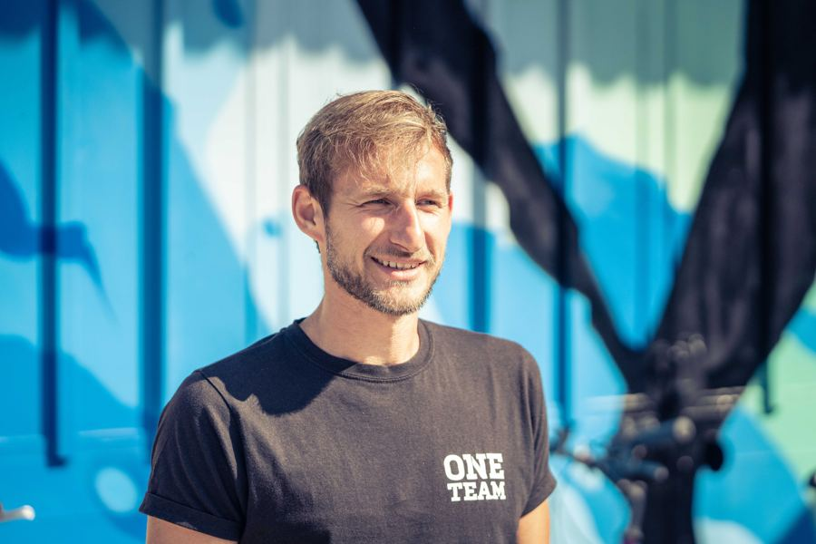

Frankfurt am Main
Hallo, ich bin Norman.
Freiberuflicher Projektleiter, Referent und Sportübungsleiter mit Fokus auf
soziale Bewegungs-, Bildungs- und Gesundheitsprojekte.
Ich verbinde wirtschaftliche Themen mit sozialem Engagement –
in meinen Arbeiten stehen Kooperation, Nachhaltigkeit und Inklusion im Mittelpunkt
Projekte, Kurse und Schulungen rund um Bewegung und Gesundheit.
Mehr erfahren →Finanzielle & digitale Beratung für Vereine, Stiftungen und Verbände.
Mehr erfahren →Updates zu Projekten, Sportpolitik und aktuellen Themen.
News werden geladen…
Bei der Sportjugend Hessen setze ich mich für demokratische Werte, Vielfalt und Menschenrechte im organisierten Sport ein. Sportvereine sind Orte der Begegnung und gelebten Alltags-Demokratie – meine Arbeit unterstützt sie dabei, das sichtbar zu machen und aktiv zu gestalten: von Antidiskriminierung über Antisemitismus-Prävention bis zur Stärkung von Vielfalt in Vereinsstrukturen.
Das Modellprojekt macht Demokratie im Sport erlebbar und hilft Vereinen, Mitbestimmung lebendiger und zugänglicher zu gestalten.
Gesundheitsförderung, Bewegungsangebote und soziale Vernetzung.
Koordination von Bewegungsspaziergängen in Frankfurt.
Regelmäßige, kostenlose Bewegungsspaziergänge für Menschen jeden Alters in Frankfurt – in Kooperation mit dem Gesundheitsamt Frankfurt und dem Sportamt Frankfurt am Main.
Zur Projektseite„In Bewegung kommen" – Termine 2026 in Höchst und Bockenheim.
06.–10. Juli 2026, BiKuZ Höchst
05.–09. Oktober 2026, BiKuZ Höchst
23.–27. November 2026, VHS Bockenheim
Pilotprojekt für öffentliche Nahverpflegung in Frankfurter Stadtteilen.
Die Frankfurter Stadtteilküche erprobt öffentliche Kochaktionen als gelebte Forderung nach einer fürsorgenden Stadt: Ernährung soll so selbstverständlich zur Stadt gehören wie Bibliotheken oder Schwimmbäder. Ziel ist eine öffentliche Nahverpflegung für alle (#ÖNVP) in jedem Frankfurter Stadtteil – mehr dazu in den News.
Zur ProjektseiteVereine, Stiftungen und Verbände stehen oft vor denselben Herausforderungen: knappe Ressourcen, gewachsene Prozesse und wenig Zeit für Digitalisierung. Mit meinem Hintergrund aus BWL-Studium, Finanz- und Controllingabteilungen sowie eigener Verbandsarbeit unterstütze ich sie dabei, wirtschaftlich stabiler und digital handlungsfähiger zu werden.
Budgetierung und Controlling für Vereine & Stiftungen.
Prozessoptimierung, z. B. Vereinsverwaltung und Reporting.
Einführung digitaler Tools für Verwaltung und Kommunikation.
Datenanalyse und Prozessoptimierung für den bundesweiten Dachverband der Weltläden.
Für: Vereine, Stiftungen und Verbände im sozialen, sportlichen und gemeinnützigen Bereich.
Platzhalter: genaues Leistungspaket ergänzen (z. B. Einzelberatung, Workshops, Projektbegleitung).
Eine Auswahl an Institutionen, mit denen ich zusammenarbeite.

Brücken bauen zwischen Zahlen, Konzepten und echten Begegnungen.
Aufgewachsen auf dem Land, lebe ich heute in Frankfurt und bewege mich beruflich zwischen Wirtschaft, Bildung und Sport. Als sportbegeisterter Mensch bin ich überzeugt: Veränderung entsteht im Miteinander.
Aufgewachsen auf dem Land, geprägt von Bewegung und Gemeinschaft.
Wirtschaftliches Fundament als Ausgangspunkt.
Mehrere Jahre in Finanz- und Controllingabteilungen.
Übergang in gemeinnützige und sportliche Projekte in Frankfurt.
Beratung, Sportpolitik und Bewegungsförderung unter einem Dach.
Hast du Interesse an einer Zusammenarbeit oder Fragen zu den Angeboten? Dann freue ich mich auf deine Nachricht!
Norman Höll
c/o Villa Gründergeist
Gärtnerweg 62
60322 Frankfurt am Main